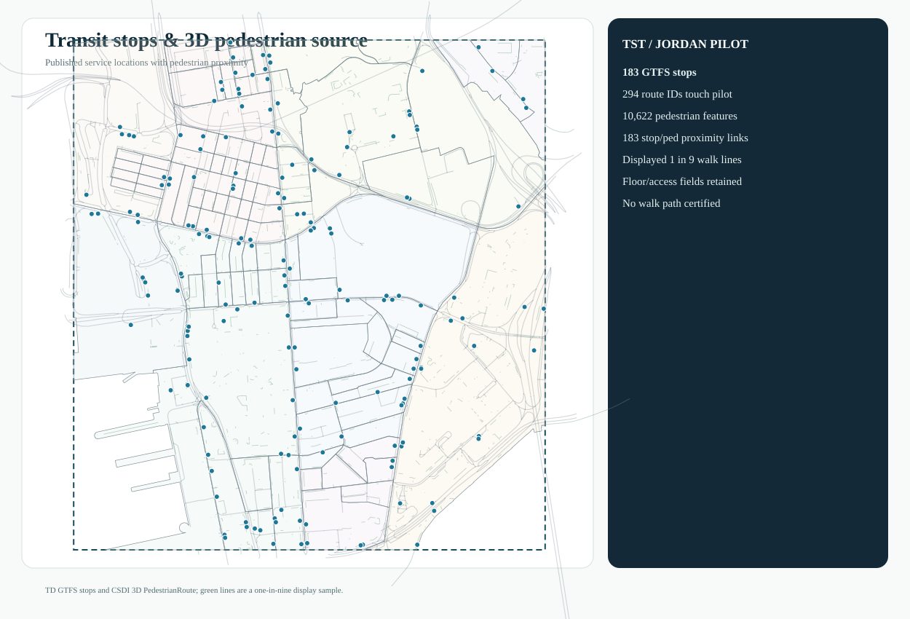
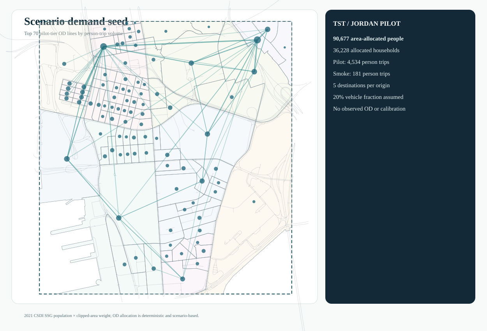

Documentation / Hong Kong / bounded GMNS and city-data pilot
Hong Kong / bounded GMNS and city-data pilot
This Tsim Sha Tsui–Jordan pilot tests whether official road, census, transit and detector sources can be represented as traceable GMNS-related objects. It is not assignment-ready and is not a completed four-stage model or calibrated forecast. The public instance and offline tools contain compact derivatives, not provider archives.
Source and object scope
| Layer | Saved scope | Interpretation |
|---|---|---|
| Physical network | 780 nodes, 1,239 directed links | Transport Department centerline-derived graph; direction and length retained |
| Zone hierarchy | 95 Census SSG fine zones, 10 STPUG parent zones | Source statistical polygons and model zones remain identifiable |
| Model access | 95 centroids, 190 nonphysical connector arcs | Centroid/access relationships; connectors are neither roads nor GPS-matchable |
| Transit | 183 GTFS stops, 294 route IDs | Stop-to-zone/network and route relationships, not a complete multimodal assignment |
| Detector evidence | 50 lane observations at 11 sites in one linked snapshot | Speed, 30-second volume and occupancy are measurements, not OD or calibrated link flows |
| Demography | 90,677.156 allocated persons; 36,228.315 households | 2021 census SSG estimates allocated by clipped-polygon area fraction |
The source register lists resource links, retrieval times, fields and hashes. Road, turn, GTFS and detector derivatives credit the Hong Kong SAR Government and Transport Department through DATA.GOV.HK; census and pedestrian source derivatives credit the Government, Census and Statistics Department/Lands Department and CSDI. See the attribution and redistribution review. Third-party source data are not relicensed by the project's software license.
Saved geographic and relational evidence

Pilot boundary and source coverage. The bounded polygon is not a citywide road model.

Directed physical roads over the SSG/STPUG hierarchy. The source-to-model crosswalk is retained in the public instance.

Centroids and access arcs are modeling objects; they are deliberately distinct from physical links.

Saved GTFS and pedestrian-proximity relationships do not imply verified walk routes or door-to-door travel times.

The deterministic internal-only demand seed is an engineering scenario, not observed or calibrated OD.
The source population and household attributes are allocated by area(clipped SSG) / area(full SSG), assuming uniform distribution within each polygon. Three sub-1% slivers are excluded with recorded reasons. Activity fields preserve population, households and stop count separately; employment is unknown. Two hypothetical person-trip rates (0.002 and 0.05 per allocated resident in an abstract hour) and a stated illustrative vehicle conversion generate seed tables, not observations. The assumption ledger states totals and exclusions.
Assignment gate and observation limits
The frozen assignment gate says assignment_ready=false, assignment_run=false, and solver_invoked=false. Free speed, lane count, period capacity, turn enforcement and all-OD directed reachability are unresolved. A schema pass cannot close those modeling gaps. No FW, CG, Lagrangian or ADMM assignment is claimed for Hong Kong.
The detector snapshot is a roadside observation layer. An optional UrbanNav reference trajectory was checked only in a private research handoff: it is not general traffic demand, and its raw/point-level data are excluded pending exact-file rights confirmation. Public aggregate QC statements are not a downloadable matched trajectory.
Reproduce the public checks
From examples/hong-kong/gmns_pilot_r1 with Python 3.12+:
python -B validate_pilot.py --instance instance
python -B trace_pilot.py --instance instance --zone 1 --detector AID05111 --stop 193
These commands check saved object relationships and trace one zone, detector and stop. They do not rebuild the official extraction or solve assignment. All five self-contained SVG views, object dictionary, and network limitations remain available for audit.